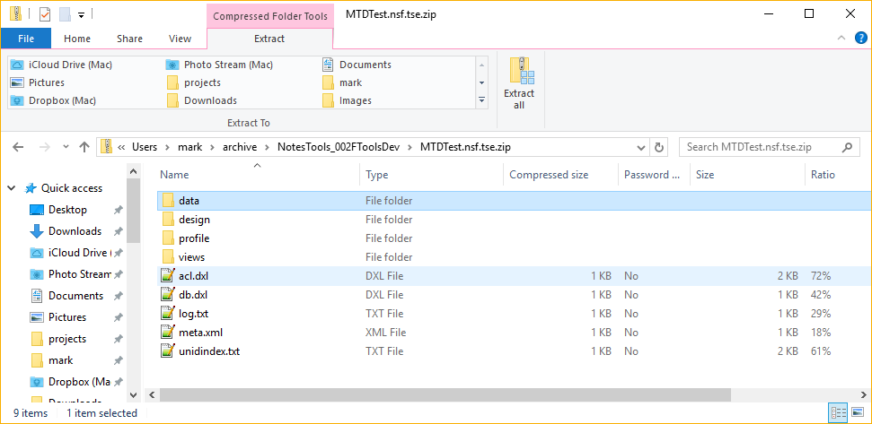

アーカイブファイルの形式
Teamstudio Export のアーカイブファイルは独自のAPIやツールを必要とせずにシンプルにアクセスできるように設計されています。アーカイブ内の全てのファイルは、XML またはプレーンテキストのいずれかのテキスト形式になっています。これらのファイルは、一般の Zip 圧縮を使用して一つのファイルに統合されています。
ディレクトリ構造
アーカイブファイルを調べる最も簡単な方法はzip拡張子を追加して、Windows エクスプローラーでファイルを開くことです。

データフォルダ
データフォルダには、データベース内の全てのデータ文書ファイルが含まれています。各ファイルが HCL の DXL 形式に基づいた XML になっています。そのままの状態で大部分は理解できますが、一方で DXL のための DTD もDomino DTD から入手することができます。各ファイルの名前は<文書ID>.dxl となっており、8 桁の 16 進数で表示されます。
デザインフォルダ
デザインフォルダはデータフォルダと同じ形式であり、Notes ID によって名付けされている設計要素の DXL ファイルも含みます。
Note
Domino はバイナリとデフォルト、二種の DXL スタイルを持つことを可能にしています。どちらも標準的なテキストベースの XML ですが、バイナリモード内において複雑なデータ値は nsf ファイルに格納されている生のバイナリデータの Base-64 エンコードバージョンで出力されます。Teamstudio Export ではバイナリモードを使用しません、なぜなら高い正確性をもたらす一方で、ドミノ内部のデータ構築に関する深い知識なしに読み取ることは不可能だからです。その代わりに、Teamstudio Export は複雑なデータ値でも人間が読める XML 要素に変換するデフォルトモードを使用しています。この形式ではアーカイブでは解釈できないバイナリデータを全て保持しますが 、一方でデータの一部分が消失する可能性は極僅かです。また作業環境下で最新バージョンの Notes を使用することで、XML の詳細が消える可能性を軽減することができます。
プロファイルフォルダ
プロファイルフォルダはデータフォルダと同じ形式であり、Notes ID によって名付けされているプロファイル文書の DXL ファイルも含みます。
Note
プロファイルフォルダはアーカイブ、バージョン2にて追加されました。
ビュー
ビューフォルダには、 データベース内すべてのビューとフォルダに対しての XMLファイルが含まれています。データやデザインのフォルダとは異なり、ビューデータには HCL 基準というものがありません。実際のフォーマットは、以下の要素を持つ非常に単純な UTF-8 でエンコードされた XML です。
ビュー
文書、カテゴリーそしてトータル要素の並びを持つルート要素です。
カテゴリー
ビュー内にあるカテゴリー行に対応するコンテナ要素です。単一でオプションの属性を持ち、行の中のカテゴリーされた値がどれほどのスペースを持つかを識別しカラム内でインデントされます。この属性を省略すると、値はインデントされません。インデントカテゴリーは a\b のような値がコラムに含まれている場合に発生し、これによりビューに2つのカテゴリー行が生成されます。最初の値(a)のインデントは 0 となり、2つめの値(b)のインデントは 1 になります。カテゴリー要素には値要素の順序も含まれます。
文書
ビュー内の文書の行に対応するコンテナ要素です。すべての文書要素には文書にある8桁で16進数のNote IDを特定するための Note ID 属性があります。カテゴリーと同様、オプションとしてインデント属性もあり、最後のデータ値をそのコラム内でインデントする必要があるスペースの数を指定しています。インデントされた文書はレスポンス文書による階層表示を使用しており、文書がレスポンス文書、またはレスポンスに対するレスポンス文書である場合に発生します。文書要素には値要素の順序も含まれます。
合計
ビューの合計(または平均、ビュー定義に依存します)を含むコンテナ要素です。合計要素には一連の値要素が含まれます。
値
ビューコラム値のラッパーです。各カテゴリー、文書、およびトータル要素には、列値の1つ、またはそれ以上の値要素が含まれています。それ以外の場合は、標準 DXL 形式の値がそのまま含まれます。 (例. <text>, <number>, など.)
acl.dxl
データベースのACL の DXL での表現となる
Note
acl.dxl は version２のアーカイブで追加されています。
audit.txt
DXL 出力中に生成される UTF-8 エンコードされたプレーンテキストのログファイルです。アーカイブ処理についての上位レベルなサマリー情報を含み、アーカイブを実行したユーザー、開始/終了時刻、アーカイブに成功およびエラーとなった文書のカウント数のような情報を記録します。このファイルは、アーカイブできなかった文書のノート ID など、実行に関する下位レベルの情報を含む古い log.txt を補完します。
db.dxl
このファイルは、データベースから空のコレクションをエクスポートするDXLによって作成されます。レプリカIDなどのデータベースレベルの情報を取得します。
log.txt
DXL 出力時に生成されるプレーンテキストのログファイルです。出力時に生成されたエラーと警告、およびデバッグ情報のトーレスをします。このファイルエラーや警告はアーカイブ作成時にユーザーに表示されますが、将来のもしもの時の参照のためにログファイルを保持します。
Note
log.txtは、アーカイブ version 3 以降追加され UTF-8としてエンコードするようにしています。以前のバージョンでは、お使いの PC 設定によるものと LMBCS が混在しているため、エンコーディング面で一貫性がありませんでした。
meta.xml
主に Teamstudio Export が UI を維持するために使用するメタデータファイルです。以下の属性を持つた単一のアーカイブ要素で構成されています。
- server - データベースがアーカイブされたサーバー
- path - そのサーバー上のデータベースのパス
- title - データベースのタイトル
- archiveDate - アーカイブ日付 – アーカイブが作成したタイムスタンプ。これは Teamstudio Export でのみ使用されるため、.NET対応の形式で保存されます。具体的には、値は1/1/0001 00:00 グレコリオ歴からで 10 msずつ刻みます。.NET の DateTime 型(System.DateTime を参照)と同じ起点ですが、Notes は 10 ms で時刻を格納するだけなので、DateTime.Ticks を100000 で割って 100ns から 10ms へと変換しています。
- archiveVersion - アーカイブバージョン – アーカイブの形式についての重要な変更を示すバージョンのインジケーターになります。現在は「2」に設定されています。将来的なリリースでは、アーカイブバージョンを使用して再アーカイブする必要のあるデータベースが特定できます。下記のアーカイブバージョン履歴(アーカイブバージョン履歴)をご覧ください。
- demoMode - デモモード – こちらはオプションになります。各ビューの入力数を制限するエクスポートのデモバージョンを使用してアーカイブを生成する場合は True に設定します。False または省略された場合は、アーカイブはエクスポート完全版で生成されたことを意味します。
unidindex.txt
これは、Note ID を UniversalNoteID(UNID) にマップするために出力中に作成されるプレーンテキストの CSV ファイルです。Teamstudio Export 自体は文書 ID を利用して文書を識別しますが文書リンクは UNID を使用するため HTML 出力中に UNID をファイル名に変換するための索引が必要です。
アーカイブバージョン履歴
| Number | Date | Export Version | Comments |
|---|---|---|---|
| 1 | 2018年1月 | 1.0.0 | 初期リリース |
| 2 | 2018年2月 | 1.0.1 | データベースACLおよびプロファイル文書のサポートを追加 |
| 3 | 2018年10月 | 2.1.0 | log.txtのエンコードをUTF-8に変更 |
| 4 | 2019年10月 | 3.0.0 | バイナリーモードの設計 DXLで design2 フォルダーを追加 DXL |
| 5 | 2019年12月 | 3.1.0 | audit.txt ログの追加 |
| 6 | 2020年5月 | 3.1.1 | ビューの列データで、小数点以下の数字に必ずピリオドを使用するように変更 |
サポート
アーカイブファイル形式は公的にサポートされています。ファイル形式に関する質問は、jp.teamstudio.comまでお問い合わせください